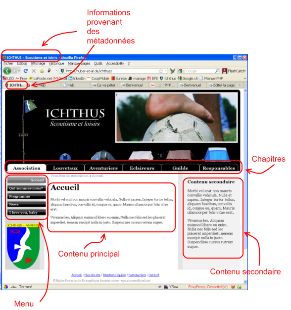
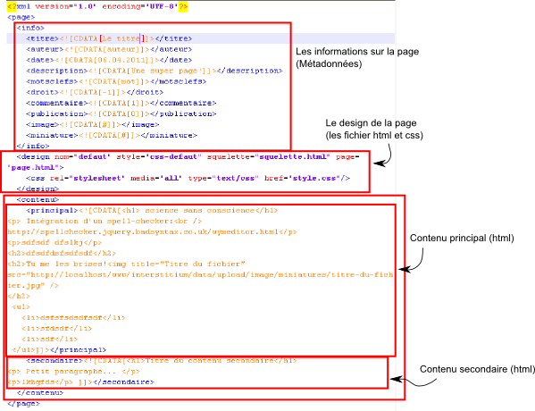

Le module "page" est un module assez basic qui affiche tout simplement une page contenant un menu (à l'occasion des chapitres), un contenu principal et un contenu secondaire.

Quand on appelle une page du module "page" l'url ressemble à cela :
www.mon-site.com/fr,page,bienvenue-sur-mon-site.html
Les données de la page sont stockés dans un fichier /data/page/nom-du-fichier.xml et ressemblent à cela :

Le menu provient du fichier /data/arborescence.xml.